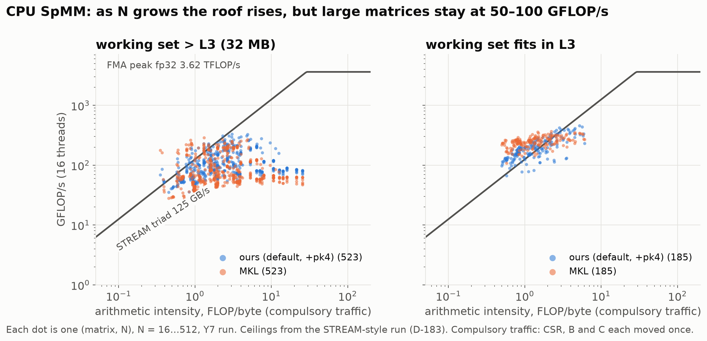
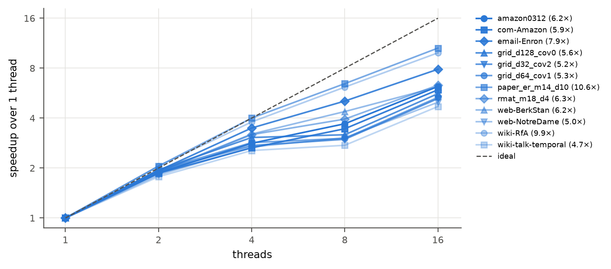

Re-testing a 2020 GPU kernel on a 2025 GPU, and building its CPU twin
Dilip Kumar (GPU track) & Pradyumna Chacham (CPU track) CSC 548 · Fall 2026 · NC State
GPU track: CUDACPU track: OpenMP
THE PROBLEM
SpMM in one picture: every node adds up its neighbours’ feature vectors
Sparse matrix A (the graph: mostly zeros, stored as CSR, rows back to back, zeros skipped) × dense matrix B (one feature row per node, N wide).
This is the main step of a graph neural network layer.
Full details: report + explainer (posted with the final report)
THE PROBLEM
SpMM is limited by memory, not math: both chips mostly wait
The CPU ceilings come from our own STREAM-style bandwidth run, not a spec sheet.
< 3%of the GPU’s arithmetic is used
< 10%of the CPU’s arithmetic is used
Each multiply-add needs a fresh number from memory: the chip could do about 50× more math than memory can feed.
SpMM’s intensity is at most about 1.2 flop/byte (median), 0.5 worst case.
Roofline = the speed limit set by memory and math together.
So every speedup here is about moving fewer bytes, or keeping every worker busy.
Full details: report + explainer (posted with the final report)
THE PROBLEM
Time is wasted in two ways: redundant reads and uneven rows
(a) Redundant reads
A warp = 32 GPU threads that move together. All 32 fetch the same sparse value: 1 useful value per request.
(b) Uneven rows
Rows differ a lot in length, so one worker gets stuck on a long row while the others idle.
SEEN IN HW1 / HW2uneven row blocks set the finish time (row-block imbalance 2.89 on dictionary28).
Full details: report + explainer (posted with the final report)
THE PAPER AND OUR PROJECT
GE-SpMM (SC ’20), the paper we re-tested: two tricks, one claim
Trick 1 · CRCLoad 32 nonzeros once into fast on-chip memory (shared memory) and share them with the warp.
Trick 2 · CWMEach thread computes 2 output columns, so each sparse value is reused.
The claimBeats NVIDIA’s library (cuSPARSE) on 2017–19 GPUs.
Full details: report + explainer (posted with the final report)
THE PAPER AND OUR PROJECT
Our project has two tracks that meet on the same matrices
GPU track
Re-test the paper on a 2025 GPU (RTX 5060 Ti)
Find what changed
Improve it
CPU track
An OpenMP version on the same node’s 16-core CPU
The baseline and the comparison
SharedThe same 118 matrices, widths N = 16 … 512, every result checked
Full details: report + explainer (posted with the final report)
GPU TRACK
The paper’s kernel lost on the new GPU: the compiler didn’t unroll its loop
Older GPUs compile it fine. This is one compiler version on one architecture, and we haven’t traced the compiler’s reason.
The 3 changed source lines
Their code
Our code
1
for (kk=0; kk<32 && jj+kk<hb; kk++)
for (kk=0; kk<count; ++kk)
2
if (blockIdx.y != gridDim.y-1)
const bool full = (blockIdx.y+1)*cols <= N;
3
if (nout>0) acc1 += val*B[offset];
if (full || …) fma_vec(…);
Unrolling = copying the loop body so several loads go out together.
Published kernel: 0.94× cuSPARSE. Same settings in our code: 1.14×.
The 3-line fix gives bit-identical output.
Full details: report + explainer (posted with the final report)
GPU TRACK
Fixed settings stop being best, so we tune the settings per graph
“Best setting” means we found it by trying every setting for each graph.
1.81×tuning per graph vs the paper’s one fixed setting
The paper picked one setting for all graphs. On the new GPU, the best setting depends on the graph.
The paper’s row-caching trick still helps, but less: 8% vs 22–33% on older GPUs. The cause isn’t known yet.
SEEN IN HW2the best schedule depended on the matrix.
Full details: report + explainer (posted with the final report)
GPU TRACK
Uneven rows: give every warp the same amount of work, not the same rows
Splitting has a cost. On even graphs it is slower (0.73–0.80×) and its gain fades by N = 512, so it is used only on uneven graphs (next slide).
Equal pieces of rows + nonzeros: the order of additions is fixed, so the results are bit-identical.
SEEN IN HW1 / HW2COO (HW1) and splitting by nonzeros (HW2: 32–41% less time than static).
Full details: report + explainer (posted with the final report)
GPU TRACK
A simple rule picks the strategy for a graph we have never seen
Attempt 1Decision treeMemorized the training graphs. On new graph families it did worse than the paper’s fixed setting.
Attempt 2k-nearest neighbours (kNN)Copy what worked for the 3 most similar graphs. Good for fine settings, but a black box that can’t choose merge path.
Attempt 3 · our ruleSpread of row lengthsCoV = spread ÷ mean of row lengths. Above a threshold fitted from our measurements: merge path. Otherwise: row split. One line to explain, and it holds on new graph families.
Full details: report + explainer (posted with the final report)
GPU TRACK
On 27 graphs it never saw, the automatic choice beats cuSPARSE’s best algorithm
The score is a fraction of the fastest setting we measured for each graph (1.0 = always picks the best). The 27 held-out graphs include whole families never seen in training. About 1% is run-to-run noise.
Even the rulebook, which uses fixed rules for the fine settings, beats cuSPARSE’s best algorithm. Letting kNN pick the fine settings instead (auto) adds a little more.
Full details: report + explainer (posted with the final report)
GPU TRACK
GPU results: two honest numbers, depending on whether we may try every setting
The answer depends on whether you may try every setting for each graph. Kernel time only, one GPU.
Try every setting (upper bound)1.3–1.6× the best cuSPARSE algorithm, depending on N
Choose automatically, unseen graphs1.14× the best cuSPARSE algorithm
cuSPARSE still wins some graphs at small widths (18 of 118 at N = 16).
Choosing costs 0.23 ms, once per graph.
Full details: report + explainer (posted with the final report)
GPU TRACK
Newer GPU, same code, 1.66× faster: the pattern points to the bigger cache
Its clock is also 1.44× higher, and we couldn’t separate clock from cache. The new GPU has fewer SMs and less memory bandwidth.
The biggest jump is exactly where B fits the new cache but not the old one. cuSPARSE sped up about 1.6× too (1.61×), so our lead over it isn’t from the hardware.
Full details: report + explainer (posted with the final report)
CPU TRACK
A CPU runs SpMM like a GPU warp does, with different machinery
Same algorithm: each core owns whole output rows, so no locks are needed.
OpenMP = threads sharing memory · AVX-512 = one instruction on 16 floats · L3 = the CPU’s shared cache.
Full details: report + explainer (posted with the final report)
CPU TRACK
The CPU fixes the same two problems: dynamic scheduling and four accumulators
Uneven rows → dynamic schedule (idle cores grab the next 64 rows)
Slow adds → four accumulators let the adds overlap
✓ 4 accumulators
✓ short rows packed 4 at a time (12–16% faster at small N)
✗ cache blocking (slower here)
AVX2 ≈ AVX-512 → memory-bound, so wider math doesn’t help
SEEN IN HW2dynamic vs static scheduling.
GPU and CPU fixes line up: merge path ↔ dynamic schedule, unrolling ↔ multiple accumulators. Both keep many loads and adds in flight.
Full details: report + explainer (posted with the final report)
CPU TRACK
Memory, not math, limits the CPU too: big graphs stay flat
The ceilings come from our own STREAM-style run. The traffic explanation is inferred from timings, because the cache-miss counters weren’t available on this node.

Graphs bigger than the 32 MB L3 cache; each dot is one graph at one width N.
The roofs125 GB/s (we measured it) and 3.6 TFLOP/s.
What we seeA wider N should raise the roof, but big graphs stay flat from N = 64. The same rows of B get evicted and re-read: about 4× the minimum traffic.
SoMemory, not math, limits the CPU too. Bandwidth is capped per core cluster (CCD, about 63 GB/s each), not by DRAM.
Full details: report + explainer (posted with the final report)
CPU TRACK
CPU results: 16 cores give 6.7×, ours beats MKL from N = 32, the GPU is faster still
16 cores → 6.7× (geomean, N = 512)

16 cores give 6.7× over 1, not 16×. One core alone already uses 38% of the chip’s bandwidth (48 of 125 GB/s).
vs Intel MKL
Our best OpenMP variant vs MKL.
MKL is faster at N = 16 (1.10×); ours is faster from N = 32 up.
vs the GPU
Different chips; not a price or power comparison.
1.9× → 4.8×
GPU speedup over our best CPU code, from N = 16 to N = 512.
Full details: report + explainer (posted with the final report)
CLOSE
Four takeaways
1Re-running an old GPU paper also tests the compiler. Its algorithm still wins on a 2025 GPU once the loop compiles properly (3 source lines). We found the loop and the fix; we haven’t traced why the compiler chose differently.
2Fixed settings don’t carry across hardware. The best choice depends on the graph and the chip, so we measure and choose per graph.
3Uneven rows are one problem we met three times (HW1 MPI row blocks, HW2 OpenMP threads, GPU warps). Divide work by nonzeros or at run time, and let a simple rule decide when. They hurt the GPU more: at high skew and N = 16 it keeps 31% of its speed vs the CPU’s 82%; merge path lifts it to 62%.
4Both machines are limited by moving data, not math (GPU < 3% of its arithmetic, CPU < 10%). So a newer chip helps only if it moves or caches data better. The new GPU’s gain is largest where the data fits its 8× larger cache, though its clock is also higher and we couldn’t separate the two. On the CPU, the timings imply that the limit at large N is re-reading B. More cores or wider vectors don’t fix that: AVX2 ≈ AVX-512, and 16 cores give 6.7×.
Full details: report + explainer (posted with the final report)
CLOSE
Next steps, what we skipped today, and questions
Next, before Dec 7
Re-run the skipped experiments with the final kernels